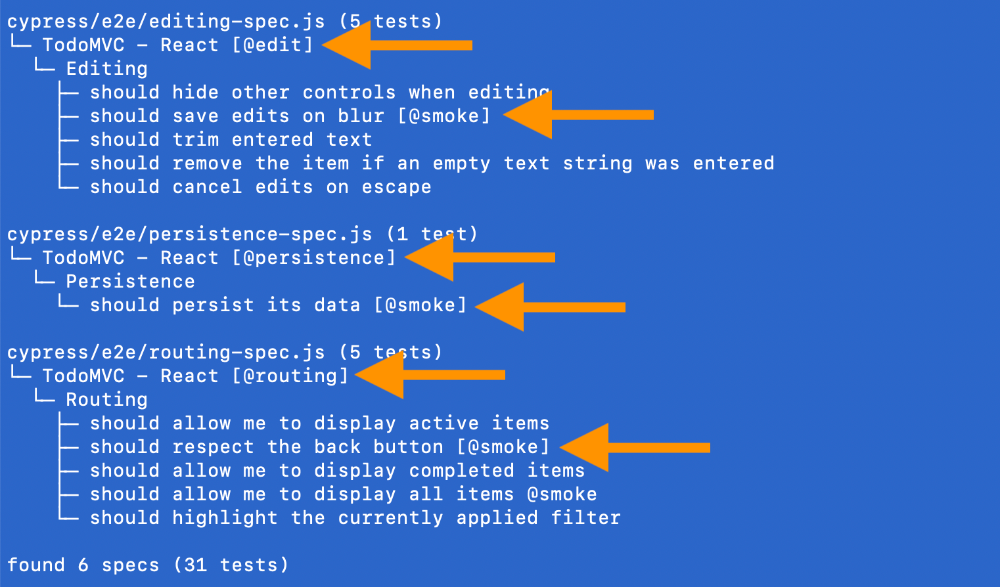
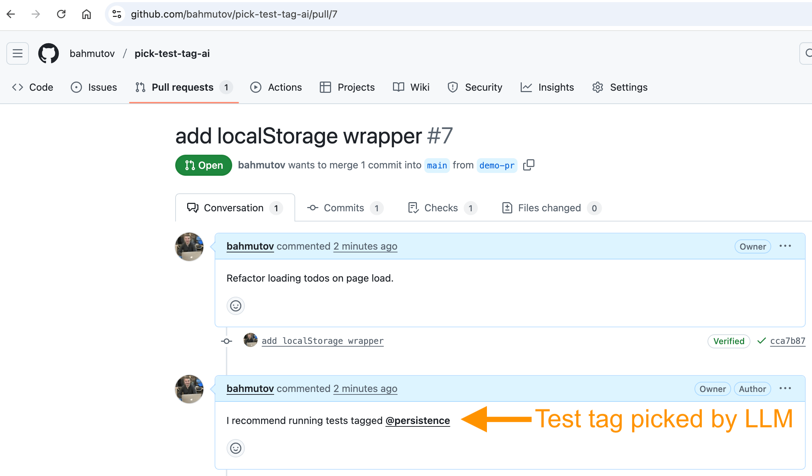
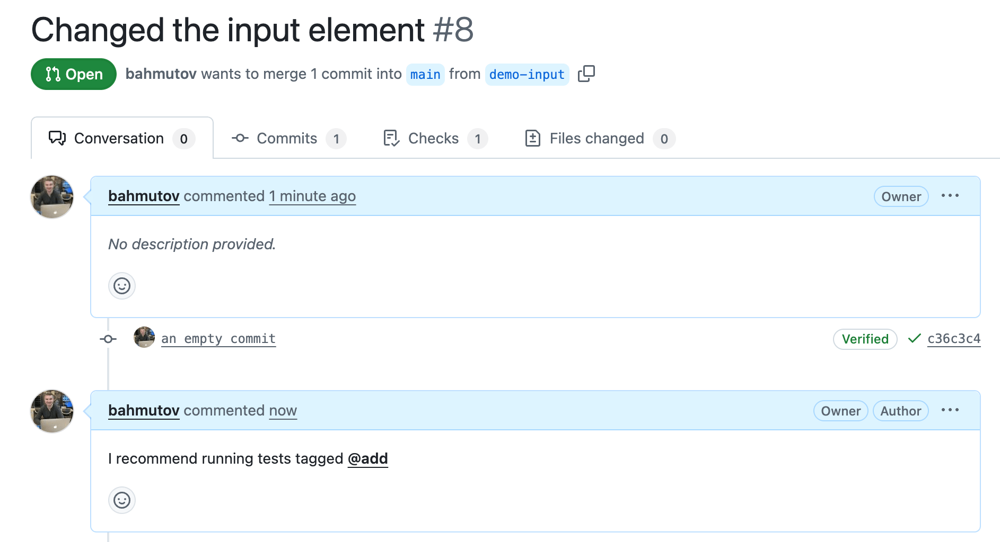
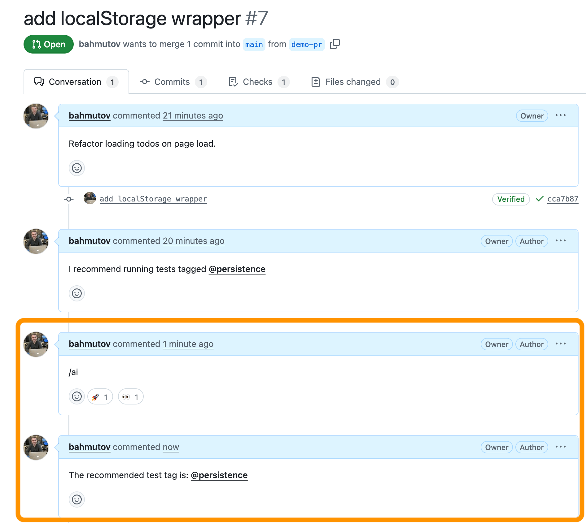

Suggest the appropriate test tag based on the pull request title and text.
In my previous blog post Pick E2E Tests To Run Using AI Summaries I picked specs to run using an intermediate text summaries. In this blog post I will show a simpler and cheap way of suggesting the end-to-end test tag for each pull request.
$ npx find-cypress-specs --names cypress/e2e/app-spec.js (15 tests) └─ TodoMVC - React ├─ adds 4 todos [@smoke, @add] ├─ When page is initially opened │ └─ should focus on the todo input field ├─ No Todos │ └─ should hide #main and #footer [@smoke] ├─ New Todo [@add] │ ├─ should allow me to add todo items │ ├─ adds items │ ├─ should clear text input field when an item is added │ ├─ should append new items to the bottom of the list │ ├─ should trim text input │ └─ should show #main and #footer when items added ├─ Item │ ├─ should allow me to mark items as complete │ ├─ should allow me to un-mark items as complete │ └─ should allow me to edit an item └─ Clear completed button ├─ should display the correct text ├─ should remove completed items when clicked [@smoke] └─ should be hidden when there are no items that are completed
cypress/e2e/completed-spec.js (3 tests) └─ TodoMVC - React [@complete] └─ Mark all as completed ├─ should allow me to mark all items as completed ├─ should allow me to clear the complete state of all items └─ complete all checkbox should update state when items are completed / cleared [@smoke]
cypress/e2e/counter-spec.js (2 tests) └─ TodoMVC - React [@add, @smoke] └─ Counter ├─ should not exist without items └─ should display the current number of todo items
cypress/e2e/editing-spec.js (5 tests) └─ TodoMVC - React [@edit] └─ Editing ├─ should hide other controls when editing ├─ should save edits on blur [@smoke] ├─ should trim entered text ├─ should remove the item if an empty text string was entered └─ should cancel edits on escape
cypress/e2e/persistence-spec.js (1 test) └─ TodoMVC - React [@persistence] └─ Persistence └─ should persist its data [@smoke]
cypress/e2e/routing-spec.js (5 tests) └─ TodoMVC - React [@routing] └─ Routing ├─ should allow me to display active items ├─ should respect the back button [@smoke] ├─ should allow me to display completed items ├─ should allow me to display all items @smoke └─ should highlight the currently applied filter
found 6 specs (31 tests)
We have 6 specs with 31 tests grouped into tags

There are 6 different tags implemented using @bahmutov/cy-grep plugin.
/** * The only allowed test tags in this project */ typeAllowedTag = | '@smoke' | '@add' | '@complete' | '@edit' | '@routing' | '@persistence'
Picking tests to run
Imagine someone unfamiliar with the project's tests opens a pull request. Which tests should we run? Ideally, we would run all tests, but that might be slow. We could run a few tests across all features: the tests tagged @smoke. Or the author of the pull request could ask someone familiar with the tests to advise. If someone asked me "which test tag is appropriate for this pull request?", I would look at the pull request title and text description to see if I can determine what user-facing changes the code change has.
bahmutov at QPW7RRQDVW ~/git/pick-test-tag-ai on main $ gb demo-pr Switched to a new branch 'demo-pr' bahmutov at QPW7RRQDVW ~/git/pick-test-tag-ai on demo-pr $ gempty "add localStorage wrapper" [demo-pr cca7b87] add localStorage wrapper bahmutov at QPW7RRQDVW ~/git/pick-test-tag-ai on demo-pr $ gh pr create ? Where should we push the 'demo-pr' branch? bahmutov/pick-test-tag-ai
Creating pull request for demo-pr into main in bahmutov/pick-test-tag-ai
? Title (required) add localStorage wrapper ? Body <Received> ? What's next? Submit remote: remote: To github.com:bahmutov/pick-test-tag-ai.git * [new branch] HEAD -> demo-pr branch 'demo-pr' set up to track 'origin/demo-pr'. https://github.com/bahmutov/pick-test-tag-ai/pull/7
I wrote the following pull request body
1
Refactor loading todos on page load.
Let's look at the pull request #7. Notice the automatic comment I recommend running tests tagged @persistence. That is the AI model automatically suggesting the tag @persistence based on the PR title + pull request body text.

The recommendation makes sense: we do want to run these tests, just look at the title:
1 2 3 4
cypress/e2e/persistence-spec.js (1 test) └─ TodoMVC - React [@persistence] └─ Persistence └─ should persist its data [@smoke]
Here is how it works.
The GitHub Actions workflow
Each time a new pull request is opened, the following workflow .github/workflows/pr-opened.yml grabs its title and the first 1000 characters of its body text.
const instructions = ` Give the following end-to-end test tags: - @smoke a few tests that go through various features of the application - @add tests go through creating new todos - @complete tests are creating todos and then marking then complete and incomplete - @edit tests edit text for existing todos - @routing tests check if the app can show screens of completed and active todos - @persistence tests check how todos are saved in the browser and loaded Determine which test tag is applicable to the following code changes. Response with the test tag by itself and nothing else. If no test tag is applicable, return "@smoke". `
const input = process.env['CODE_CHANGES'] if (!input) { thrownewError('CODE_CHANGES environment variable is required') }
// output logging into error stream console.error('Asking OpenAI for test tags...') console.error(input)
const answer = awaitask(instructions, input)
console.log(answer)
The test tag descriptions are manual and can be expanded if needed to better describe the tests under the tag.
1 2 3 4 5 6 7 8 9 10 11 12 13 14
const instructions = ` Give the following end-to-end test tags: - @smoke a few tests that go through various features of the application - @add tests go through creating new todos - @complete tests are creating todos and then marking then complete and incomplete - @edit tests edit text for existing todos - @routing tests check if the app can show screens of completed and active todos - @persistence tests check how todos are saved in the browser and loaded Determine which test tag is applicable to the following code changes. Response with the test tag by itself and nothing else. If no test tag is applicable, return "@smoke". `
I tried other OpenAI models, they all worked pretty much the same. In a sense, our problem is very simple: pick the best matching text from a very limited list of available tags. LLMs seem to match the synonyms and word forms pretty well. Let's see if a pull request with the title "Changed the input element" matches the "@add tests go through creating new todos" text. Here is the pull request #8

Nice, that is the tag for the tests that probably cover the changes to the "Todo" item input implementation:
Test tag on demand
We can determine the test tag when the user asks for it, instead of computing it automatically when the pull request is opened. I can use the peter-evans/slash-command-dispatch action to trigger the "find the test tag" workflow when the user enters the /ai comment.
-name:Printthedeterminedtag🏷️ run:| echo "The recommended test tag is: ${{ steps.find_test_tag.outputs.TAG }}" >> $GITHUB_STEP_SUMMARY -name:Writetagbackintothecomment💬 # https://github.com/peter-evans/create-or-update-comment uses:peter-evans/create-or-update-comment@v4 with: token:${{secrets.GH_PERSONAL_TOKEN}} repository:${{github.event.client_payload.github.payload.repository.full_name}} issue-number:${{github.event.client_payload.github.payload.issue.number}} body:| The recommended test tag is:**${{steps.find_test_tag.outputs.TAG}}**

Nice.
Cost
Test tags list with a summary is small and does not change often. Pull request title plus text body are limited to 1000 characters, so are very small. Matching the PR text to the test tags should be quick and cheap AI operation. Just to see how many tokens we used
Calling this code with "changed the input element" code change produces:
1 2 3 4 5 6 7 8 9 10
Asking OpenAI for test tags... changed the input element { input_tokens: 154, input_tokens_details: { audio_tokens: null, cached_tokens: 0, text_tokens: null }, output_tokens: 3, output_tokens_details: { reasoning_tokens: 0, text_tokens: null }, total_tokens: 157 } @add
So we used 154 input and 3 output tokens. For the full picture, https://openai.com/api/pricing/ has Input: $2.00 / 1M tokens and Output: $8.00 / 1M tokens bringing out query cost to $0.0003